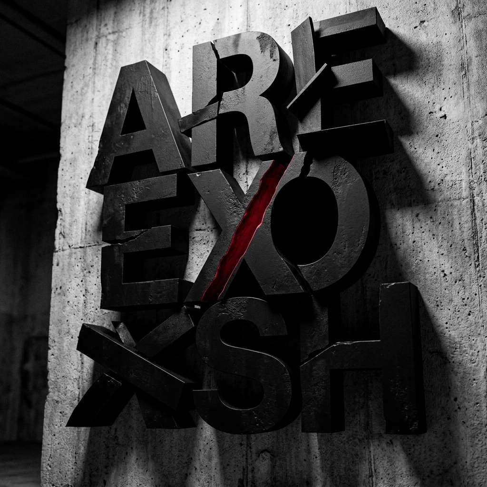

Typography
Where typography meets photography — a visual essay exploring how letters exist in the physical world. Signage, graffiti, and architectural lettering become the subjects of this cross-disciplinary study.

Found typography — Letters as architecture in urban landscapes
Close-up — Industrial letterforms
Decay and character — Weathered signage
Scale study — Monumental letters against concrete textures